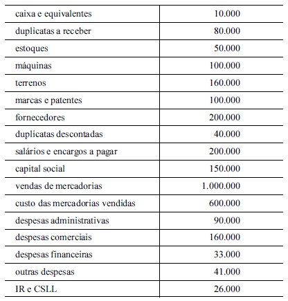
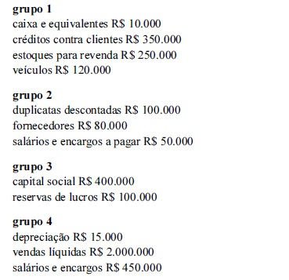

Determinada sociedade comercial criou uma rubrica contábil para abrigar os valores dos estoques em trânsito. Na abertura do exercício corrente, essa rubrica possuía saldo de R$ 50.000.
A respeito dessa situação hipotética, julgue os próximos itens.
A aquisição de mercadorias para revenda, quando classificável na conta mencionada, gerará uma contrapartida em conta de fornecedores ou de caixa e equivalentes.
No que se refere ao balancete de verificação contábil, julgue os itens subsequentes.
Em um balancete de seis colunas, apresentam-se, inicialmente, os saldos existentes nas rubricas contábeis no final do período anterior, seguidos da letra D ou C, que indicam se o referido saldo é devedor ou credor, respectivamente.
Com relação à escrituração contábil nos livros das sociedades, julgue os itens subsequentes.
A aquisição à vista de um veículo pelo valor de R$ 80.000, ainda que esse valor resulte de um desconto, negociado no momento da aquisição, no valor de R$ 4.000, representa-se por meio de um lançamento de primeira fórmula.
Determinada sociedade comercial realizou, no período corrente, as transações apresentadas a seguir.
• Apropriou a terceira cota anual cheia de depreciação de um veículo, originalmente adquirido por R$ 60.000, com vida útil estimada em 5 anos. A empresa tem como política considerar um valor residual de 10% para todos os seus bens. O método de depreciação empregado é o da soma dos dígitos dos anos.
• Descontou, no banco onde mantém conta, uma duplicata a vencer em 60 dias. O título, com valor nominal de R$ 100.000, gerou um crédito de R$ 97.000 na conta-corrente da empresa.
• Vendeu mercadorias por R$ 10.000, líquido de tributos, realizando a baixa dos estoques correspondentes, no valor de R$ 5.500.
Nessa situação hipotética,
a depreciação do veículo gerou um crédito de R$ 10.800 na conta de depreciação acumulada.
Com relação à escrituração contábil nos livros das sociedades, julgue os itens subsequentes.
Em algumas atividades, é comum que o cliente realize um adiantamento ao fornecedor, por conta do bem ou do serviço que lhe será entregue. Quando do efetivo recebimento do adiantamento, o fornecedor, em cumprimento ao regime de caixa, deverá lançar em sua contabilidade um crédito em conta de passivo, em contrapartida à conta caixa ou equivalentes.
Considerando que a contabilidade é a ciência que estuda os fenômenos patrimoniais sob o aspecto da finalidade organizacional, julgue os itens a seguir, no que se refere a conceitos, objetivos e finalidades da contabilidade.
Para o estudo da contabilidade, patrimônio é a diferença entre ativos e passivos detidos pelas entidades.
Considere os dados da tabela a seguir, retidos da contabilidade de determinada sociedade empresarial, com valores em reais (R$).

Com base nessas informações, julgue os itens que se seguem.
O lucro bruto do exercício da referida empresa foi de R$ 50.000.
No que se refere ao balancete de verificação contábil, julgue os itens subsequentes.
O balancete de verificação é um resumo ordenado de todas as contas utilizadas pela contabilidade da entidade que o apresenta, destinando-se a detectar todos os possíveis erros de contabilização eventualmente ocorridos.
No que se refere ao balancete de verificação contábil, julgue os itens subsequentes.
O balancete de verificação pode ser levantado em modelos que vão de um mínimo de duas colunas a um máximo de seis colunas.
Com relação à escrituração contábil nos livros das sociedades, julgue os itens subsequentes.
Em função da competência contábil, deve ser considerado despesa do exercício corrente o valor do aluguel do imóvel que tenha sido utilizado no exercício corrente e só será pago no exercício seguinte.
Considerando que a contabilidade é a ciência que estuda os fenômenos patrimoniais sob o aspecto da finalidade organizacional, julgue os itens a seguir, no que se refere a conceitos, objetivos e finalidades da contabilidade.
Sob a ótica citada, o objeto da contabilidade é o patrimônio do ente contábil específico.
Determinada sociedade comercial criou uma rubrica contábil para abrigar os valores dos estoques em trânsito. Na abertura do exercício corrente, essa rubrica possuía saldo de R$ 50.000.
A respeito dessa situação hipotética, julgue os próximos itens.
A referida conta é de natureza credora.
Determinada sociedade comercial realizou, no período corrente, as transações apresentadas a seguir.
• Apropriou a terceira cota anual cheia de depreciação de um veículo, originalmente adquirido por R$ 60.000, com vida útil estimada em 5 anos. A empresa tem como política considerar um valor residual de 10% para todos os seus bens. O método de depreciação empregado é o da soma dos dígitos dos anos.
• Descontou, no banco onde mantém conta, uma duplicata a vencer em 60 dias. O título, com valor nominal de R$ 100.000, gerou um crédito de R$ 97.000 na conta-corrente da empresa.
• Vendeu mercadorias por R$ 10.000, líquido de tributos, realizando a baixa dos estoques correspondentes, no valor de R$ 5.500.
Nessa situação hipotética,
a empresa, no momento do desconto do título, contabilizou despesa com encargos financeiros de R$ 3.000.
Considerando que a contabilidade é a ciência que estuda os fenômenos patrimoniais sob o aspecto da finalidade organizacional, julgue os itens a seguir, no que se refere a conceitos, objetivos e finalidades da contabilidade.
A contabilidade integra o rol das ciências exatas por estar dedicada à mensuração da riqueza do ente contábil.
Determinada sociedade comercial realizou, no período corrente, as transações apresentadas a seguir.
• Apropriou a terceira cota anual cheia de depreciação de um veículo, originalmente adquirido por R$ 60.000, com vida útil estimada em 5 anos. A empresa tem como política considerar um valor residual de 10% para todos os seus bens. O método de depreciação empregado é o da soma dos dígitos dos anos.
• Descontou, no banco onde mantém conta, uma duplicata a vencer em 60 dias. O título, com valor nominal de R$ 100.000, gerou um crédito de R$ 97.000 na conta-corrente da empresa.
• Vendeu mercadorias por R$ 10.000, líquido de tributos, realizando a baixa dos estoques correspondentes, no valor de R$ 5.500.
Nessa situação hipotética,
a venda de mercadorias gerou um resultado com mercadorias de R$ 4.500.
Considere os dados da tabela a seguir, retidos da contabilidade de determinada sociedade empresarial, com valores em reais (R$).
Com base nessas informações, julgue os itens que se seguem.
As contas do ativo dessa empresa somam R$ 500.000.
Nas demonstrações contábeis de determinada empresa, foram selecionadas as contas a seguir, reunidas em quatro grupos, e seus respectivos saldos.

Com base nessas informações, julgue os seguintes itens.
Um fato modificativo exige um registro contábil em conta do grupo 4.
Nas demonstrações contábeis de determinada empresa, foram selecionadas as contas a seguir, reunidas em quatro grupos, e seus respectivos saldos.
Com base nessas informações, julgue os seguintes itens.
O rol de contas está incompleto, visto que o total de saldos das contas dos grupos 1 e 2 supera o montante do grupo 3.
Determinada sociedade comercial criou uma rubrica contábil para abrigar os valores dos estoques em trânsito. Na abertura do exercício corrente, essa rubrica possuía saldo de R$ 50.000.
A respeito dessa situação hipotética, julgue os próximos itens.
No plano de contas da sociedade, a conta descrita integra o ativo disponível.
Nas demonstrações contábeis de determinada empresa, foram selecionadas as contas a seguir, reunidas em quatro grupos, e seus respectivos saldos.
Com base nessas informações, julgue os seguintes itens.
Se a empresa realizar um crédito em conta do grupo 1, em contrapartida a um débito em contas dos grupos 2 e 4, ela estará representando um fato misto.